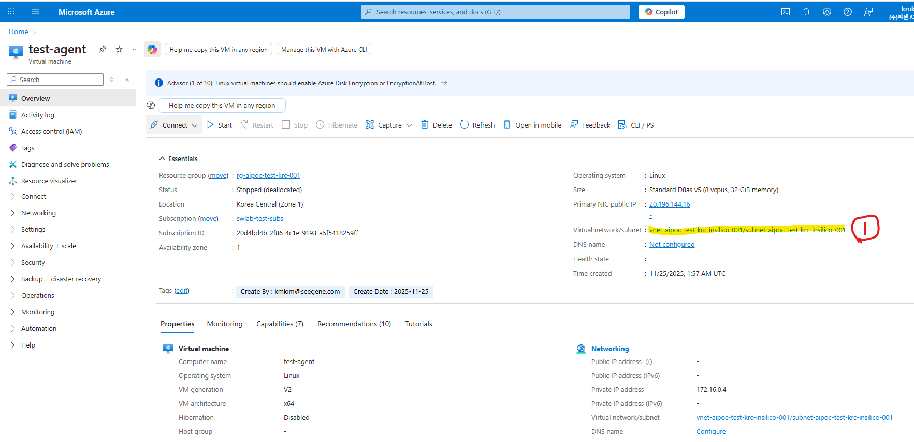
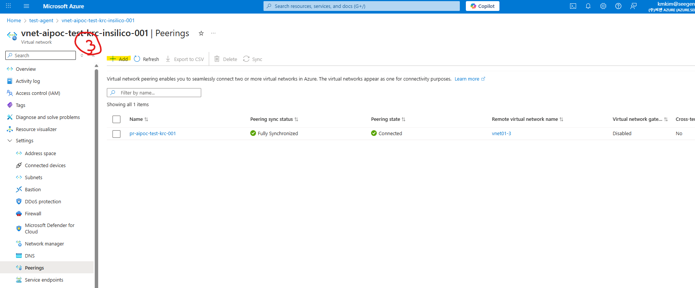

1 문제 상황
1.1 배경

- Korea Central 리전에서 VM을 생성하고 VNet을 설정했다. 이후 Azure OpenAI 리소스를 Data Zone Standard 배포 유형으로 사용하기 위해 East US 리전에 생성했다.
- 이유: Korea Central은 Data Zone Standard 배포 유형을 지원하지 않는다.
1.2 발생한 문제
Azure OpenAI 리소스와 VM 리소스가 서로 다른 지역에 있어서 LLM 모델을 배포해도 접근이 차단되었다.
원인: 서로 다른 지역에 있는 리소스는 각각의 VNet이 Peering되어야 통신이 가능하다.
1.3 환경 정보
- Korea Central (VM)
- VNet:
vnet-aipoc-test-krc-insilico-001
- 리소스 그룹:
rg-aipoc-test-krc-001
- VNet:
- East US (Azure OpenAI)
- VNet:
vnet01-3
- Private Endpoint 포함
- VNet:
2 VNet Peering 개념
2.1 VNet Peering이란
VNet Peering은 Azure의 백본 네트워크를 통해 두 개의 가상 네트워크를 연결하는 기능이다. 피어링된 VNet의 리소스는 동일 네트워크에 있는 것처럼 서로 통신할 수 있다.
2.2 주요 특징
- 낮은 지연시간: Azure 백본 네트워크를 사용하여 빠른 통신 제공
- 프라이빗 연결: 공용 인터넷을 거치지 않는 안전한 연결
- 리전 간 지원: Global VNet Peering으로 서로 다른 지역 연결 가능
- 양방향 설정: 두 VNet 모두에서 Peering 설정 필요
2.3 Peering 유형
Regional VNet Peering
- 동일 Azure 지역 내 VNet 연결
- 가장 낮은 지연시간
Global VNet Peering
- 서로 다른 Azure 지역 간 VNet 연결
- 본 사례: Korea Central ↔︎ East US
3 VNet Peering 설정 방법
3.1 1단계: VNet 리소스 찾기
Azure Portal에서 VNet 리소스를 찾는다.
Azure Portal 검색 창에 리소스 그룹 이름 입력
- 예:
rg-aipoc-test-krc-001
- 예:
리소스 그룹 클릭
리소스 목록에서 VNet 리소스 찾기
- 예:
vnet-aipoc-test-krc-insilico-001
- 예:

3.2 2단계: Peering 메뉴 접근
VNet 리소스 페이지에서 Peering 설정 메뉴로 이동한다.
왼쪽 메뉴 바 확인
Settings (설정) 섹션으로 스크롤
Peering 메뉴 클릭

참고: Virtual Network 리소스에는 반드시 Peering 메뉴가 존재한다. 메뉴가 보이지 않는다면 리소스 유형을 확인한다.
3.3 3단계: Peering 생성 (Korea Central → East US)
Korea Central VNet에서 East US VNet으로 Peering을 생성한다.
- Peering 메뉴에서 + Add 클릭

- 피어링 설정 입력
- Peering link name: 예)
krc-to-eus
- Virtual network deployment model:
Resource manager
- Subscription: East US VNet이 있는 구독 선택
- Virtual network:
vnet01-3선택
- Peering link name: 예)
- 추가 설정 (기본값 유지 권장)
- Allow traffic from remote virtual network:
Enabled
- Allow traffic to remote virtual network:
Enabled
- Allow gateway or route server transit: 필요시 설정
- Allow traffic from remote virtual network:
- Add 클릭하여 Peering 생성
3.4 4단계: Peering 상태 확인
Peering 생성 후 연결 상태를 확인한다.
Korea Central VNet (vnet-aipoc-test-krc-insilico-001)
- Peering status: Connected
- Remote VNet: vnet01-3
East US VNet (vnet01-3)
- Azure가 자동으로 역방향 Peering 생성
- Peering status: Connected
- Remote VNet: vnet-aipoc-test-krc-insilico-001
중요: 양방향 Peering이 모두
Connected상태여야 정상 통신이 가능하다.
4 Peering 방향성 이해
4.1 양방향 설정의 필요성
VNet Peering은 양방향으로 설정되어야 완벽하게 통신할 수 있다.
- A → B Peering: A VNet에서 B VNet으로의 트래픽 허용
- B → A Peering: B VNet에서 A VNet으로의 트래픽 허용
4.2 자동 생성 메커니즘
Azure Portal에서 Peering을 생성하면 다음과 같이 동작한다:
- 소스 VNet에서 Peering 생성 요청
- Azure가 자동으로 대상 VNet에 역방향 Peering 생성 시도
- 권한이 있다면 자동으로 양방향 Peering 완성
- 권한이 없다면 대상 VNet에서 수동으로 승인 필요
4.3 본 사례의 Peering 구조
Korea Central East US
┌─────────────────────┐ ┌─────────────────────┐
│ vnet-aipoc-test-... │ ←─────→ │ vnet01-3 │
│ │ │ │
│ VM │ │ Azure OpenAI │
│ Private Resources │ │ Private Endpoint │
└─────────────────────┘ └─────────────────────┘ 5 연결 테스트
5.1 Peering 설정 후 확인 사항
- Peering 상태 확인
- 양쪽 VNet 모두
Connected상태
- 양쪽 VNet 모두
- 네트워크 연결 테스트
- VM에서 Azure OpenAI Private Endpoint로 ping 또는 curl 테스트
- 예:
curl https://<openai-resource>.openai.azure.com
- VM에서 Azure OpenAI Private Endpoint로 ping 또는 curl 테스트
- NSG (Network Security Group) 확인
- 필요한 포트가 열려있는지 확인
- Azure OpenAI: HTTPS (443)
- 필요한 포트가 열려있는지 확인
5.2 문제 해결
Peering이 Connected 상태가 아닌 경우
- 구독 권한 확인
- VNet 주소 공간 중복 확인
- Azure Policy 제약 확인
연결은 되지만 통신이 안 되는 경우
- NSG 규칙 확인
- Private Endpoint DNS 설정 확인
- VNet의 서비스 엔드포인트 확인
6 비용 및 제약사항
6.1 비용
Regional VNet Peering
- 인바운드/아웃바운드 데이터 전송 비용 발생
- 약 $0.01/GB
Global VNet Peering (본 사례)
- Regional보다 높은 데이터 전송 비용
- Korea Central ↔︎ East US: 약 $0.035/GB
6.2 제약사항
- 주소 공간 중복 불가: 두 VNet의 IP 주소 범위가 겹치면 안 됨
- 전이적 라우팅 미지원: A-B, B-C Peering이 있어도 A-C는 직접 통신 불가
- VPN Gateway 제약: 특정 구성에서 제한 사항 존재